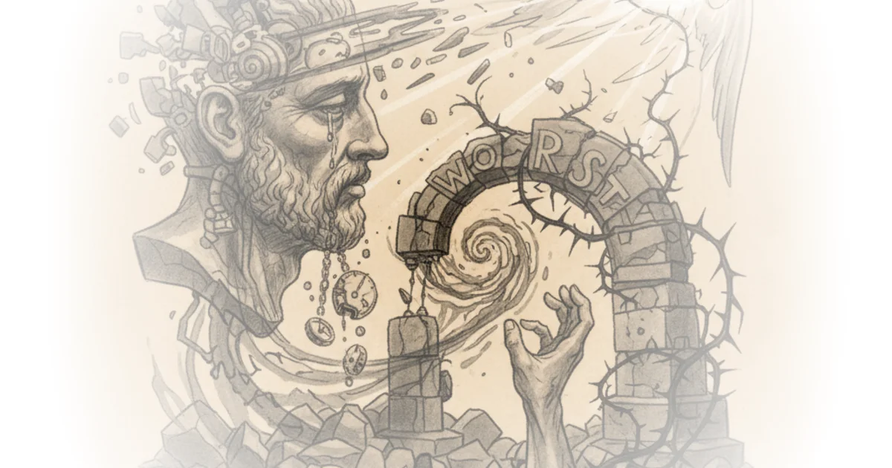

New Podcast Release: Wayne Hsiung Peter Singer · Bold Reasoning with Peter Singer ·Jul 24, 2025 · 10 min read · Culture
The Case for Christian Anarchism - Part VI Anarchierkegaard · Kierkegaardian Reflections ·Jul 22, 2025 · 30 min read · Faith
Are AI companions replacing real friends? Jacqueline Nesi · Techno Sapiens ·Jul 21, 2025 · 10 min read · AI & Tech
095: The travel issue: must-haves, hotel bedding, a mini guide & more Various · Two Truths ·Jul 20, 2025 · 12 min read · Culture
When collectivity is confused with compliance Sara Ahmed · feministkilljoys ·Jul 18, 2025 · 10 min read · Culture
Can Kant be Politicised? Rafael Holmberg · Antagonisms of the Everyday ·Jul 14, 2025 · 19 min read · Culture
"Death! Death! To the IDF!" Anarchierkegaard · Kierkegaardian Reflections ·Jun 30, 2025 · 11 min read · Faith
Life! Life! From the Father of Lights! Anarchierkegaard · Kierkegaardian Reflections ·Jun 30, 2025 · 10 min read · Faith 
Dostoevsky - Crime and Punishment - A Philosophical Guide Philosophize This! · ·Jun 29, 2025 · 27 min read
Episode #231 ... The Late Work of Wittgenstein - Language Games Stephen West · ·Jun 29, 2025 · 26 min read
092: Maternal desire: The missing element of mental health for mothers Various · Two Truths ·Jun 24, 2025 · 11 min read · Culture
The Postmodern Case of Charlie Kirk Rafael Holmberg · Antagonisms of the Everyday ·Jun 22, 2025 · 10 min read · Culture
The Case for Christian Anarchism - part V Anarchierkegaard · Kierkegaardian Reflections ·Jun 20, 2025 · 29 min read · Faith
The Ones Thrown Under the Bus Peter Gelderloos · Surviving Leviathan ·Jun 15, 2025 · 16 min read · Political Strategy
$50,000 essay contest about consciousness; AI enters its scheming vizier phase; Sperm whale speech mirrors human language; Pentagon UFO hazing, and more. Erik Hoel · ·Jun 13, 2025 · 13 min read · AI & Tech
Dostoevsky - Notes From Underground - A Philosophical Guide Philosophize This! · ·Jun 10, 2025 · 26 min read
Postscript to "Part IV" Anarchierkegaard · Kierkegaardian Reflections ·Jun 7, 2025 · 15 min read · Faith
Marx in the Shadow of Marxism Rafael Holmberg · Antagonisms of the Everyday ·Jun 3, 2025 · 11 min read · Culture
Deadly Double Standards Peter Gelderloos · Surviving Leviathan ·May 28, 2025 · 14 min read · Political Strategy